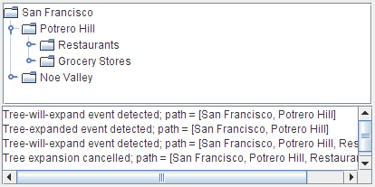

How to Write a Tree-Will-Expand Listener
The tree-will-expand listener prevents a tree node from expanding or collapsing. To be notified just after an expansion or collapse occurs, you should use a tree expansion listener instead.
This demo adds a tree-will-expand listener to the
TreeExpandEventDemoexample discussed in How to Write a Tree Expansion Listener. The code added here demonstrates that tree-will-expand listeners prevent node expansions and collapses: The listener will prompt you for confirmation each time you try to expand a node.

Try this:
- Click the Launch button to run TreeExpandEventDemo2 using Java™ Web Start (download JDK 6). Alternatively, to compile and run the example yourself, consult the example index.

- Click the graphic to the left of the Potrero Hill node. This tells the tree that you want to expand the node.
A dialog appears asking you whether you really want to expand the node.- Click "Expand" or dismiss the dialog.
Messages in the text area tell you that both a tree-will-expand event and a tree-expanded event have occurred. At the end of each message is the path to the expanded node.- Try to expand another node, but this time press the "Cancel Expansion" button in the dialog.
The node does not expand. Messages in the text area tell you that a tree-will-expand event occurred, and that you cancelled a tree expansion.- Collapse the Potrero Hill node.
The node collapses without a dialog appearing, because the event handler'streeWillCollapsemethod lets the collapse occur, uncontested.The following snippet shows the code that this program adds to
TreeExpandEventDemo. The bold line prevents the tree expansion from happening. You can find all the demo's source code inTreeExpandEventDemo2.java.public class TreeExpandEventDemo2 ... { ... class DemoArea ... implements ... TreeWillExpandListener { ... public DemoArea() { ... tree.addTreeWillExpandListener(this); ... } ... //Required by TreeWillExpandListener interface. public void treeWillExpand(TreeExpansionEvent e) throws ExpandVetoException { saySomething("Tree-will-expand event detected", e); //...show a dialog... if (/* user said to cancel the expansion */) { //Cancel expansion. saySomething("Tree expansion cancelled", e); throw new ExpandVetoException(e); } } //Required by TreeWillExpandListener interface. public void treeWillCollapse(TreeExpansionEvent e) { saySomething("Tree-will-collapse event detected", e); } ... } }
The Tree-Will-Expand Listener API
The TreeWillExpandListener Interface
TreeWillExpandListenerhas no adapter class.
Method Purpose treeWillCollapse(TreeExpansionEvent) Called just before a tree node collapses. To prevent the collapse from occurring, your implementation of this method should throw a ExpandVetoExceptionevent.treeWillExpand(TreeExpansionEvent) Called just before a tree node expands. To prevent the expansion from occurring, your implementation of this method should throw a ExpandVetoExceptionevent.See The Tree Expansion Event API for information about the
TreeExpansionEventargument for the preceding methods.
Examples that Use Tree-Will-Expand Listeners
TreeExpandEventDemo2,
featured in this section,
is our only example that uses a tree-will-expand listener.